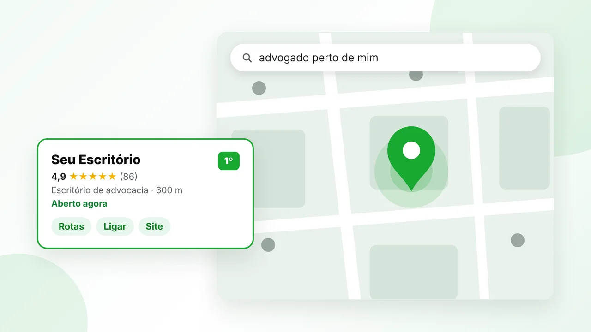
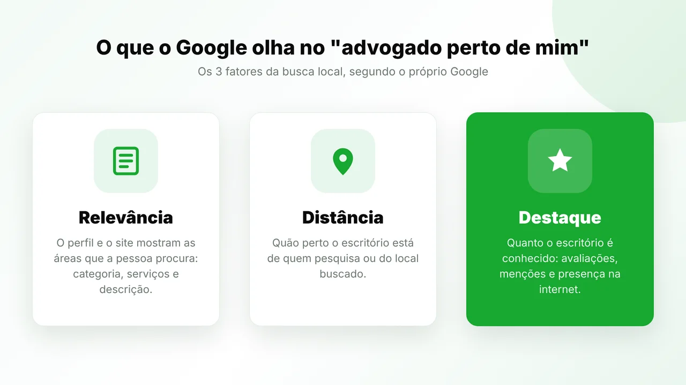
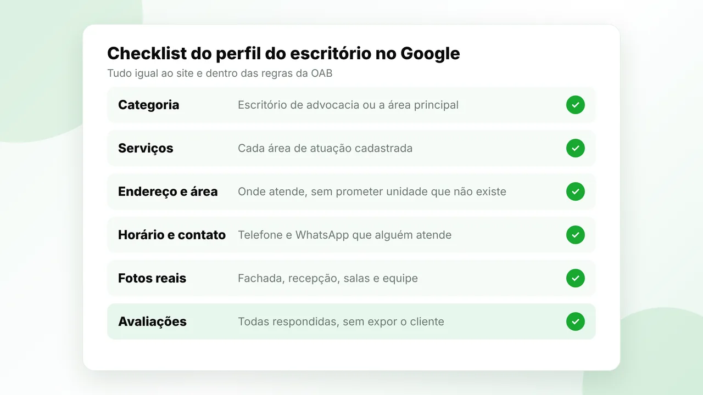

Para aparecer quando alguém pesquisa "advogado perto de mim" ou "escritório de advocacia perto de mim", seu escritório precisa informar com clareza onde atende, quais serviços oferece e como entrar em contato. Reunimos ações práticas para fortalecer essa presença no Google, no Maps e em buscas locais, sem depender de uma única página ou repetir o nome de bairros artificialmente.
A busca "advogado perto de mim" é resolvida principalmente no Google Maps. O Google mostra os escritórios mais próximos de quem pesquisa que tenham o perfil mais relevante para a área procurada e mais destaque na internet, como avaliações e menções. Não é quem paga mais: é quem tem as informações mais completas e confiáveis.
O que fortalece a presença local do escritório
- Informações consistentes: endereço, telefone, horário e áreas de atuação devem coincidir nos canais digitais.
- Perfil local completo: fotos adequadas, descrição objetiva e categorias coerentes ajudam a apresentar o escritório.
- Páginas úteis no site: cada localidade ou área de atuação precisa de conteúdo próprio, não apenas de uma lista de cidades.
- Contato simples: quem encontra o escritório deve conseguir ligar, solicitar informações ou obter orientações sobre o atendimento.
- Reputação bem cuidada: avaliações e respostas profissionais contribuem para a confiança de quem está comparando opções.
Como funciona a busca por "advogado perto de mim"
Segundo as orientações do Google sobre classificação local, três fatores decidem quem aparece: relevância (o quanto o perfil combina com o que a pessoa buscou), distância (o quanto o escritório está perto) e destaque (o quanto o escritório é conhecido, com avaliações e presença na internet). A distância você não muda. Os outros dois, sim.

Quem procura atendimento jurídico nas proximidades geralmente quer resolver uma necessidade concreta e saber se o escritório atende naquela região. Por isso, a presença local deve refletir a área de atendimento verdadeira, seja um endereço físico, seja uma atuação regional com consultas presenciais ou remotas.
Começamos verificando se o endereço e os dados de contato estão corretos em todos os canais. Nome, telefone, horário e informações de atendimento divergentes podem confundir potenciais clientes e dificultar a confirmação de que encontraram o escritório certo.
Também recomendamos descrever a área atendida com precisão. Um escritório localizado em Curitiba, por exemplo, pode explicar se recebe clientes de bairros próximos ou de municípios da região metropolitana, sem sugerir que possui unidades onde não tem endereço ou atendimento efetivo.
O perfil do escritório no Google Meu Negócio precisa estar completo
O perfil do escritório no Google Meu Negócio (hoje chamado de Perfil da Empresa no Google) é o que aparece no Maps quando alguém pesquisa advogado perto de mim. Se o escritório ainda não tem, veja como cadastrar a empresa no Google do jeito certo. O perfil precisa representar a atividade com clareza. Preencha os dados disponíveis, mantenha horários atualizados, escolha categorias compatíveis com os serviços prestados e escreva uma descrição objetiva sobre a atuação e a região atendida. Na prática, os pontos que mais pesam são:
- Categoria principal: "Escritório de advocacia" ou a categoria da área principal, quando existir uma mais específica.
- Serviços: cada área de atuação cadastrada como serviço, com o nome que o cliente pesquisa.
- Descrição: o que o escritório faz, para quem e em qual região, sem promessa de resultado.
- Avaliações respondidas: todas, inclusive as antigas, sem expor o cliente.
Use imagens atuais e apropriadas, como a entrada do local, salas de atendimento e áreas comuns, sempre respeitando a privacidade de clientes e colaboradores. Evite imagens genéricas que possam criar uma impressão diferente da experiência real oferecida pelo escritório.
Depois da configuração, estabeleça uma rotina de revisão. Mudou o telefone? O horário de atendimento? A forma de receber clientes? Atualize o perfil e o site. Na Assessoria Atlas, tratamos essa consistência como parte do nosso serviço de Google Meu Negócio e de SEO local, junto com a qualidade das páginas e a facilidade de contato.

Quer saber como sua empresa aparece hoje no Google e nas IAs? A Atlas faz um diagnóstico gratuito e mostra o que corrigir primeiro. Quero meu diagnóstico gratuito
O site deve explicar a atuação e a região sem criar páginas vazias
Uma página de localização é útil quando responde a dúvidas reais: onde fica o escritório, como funciona o atendimento, quais áreas jurídicas são atendidas e como iniciar uma conversa. Trocar apenas o nome da cidade em várias páginas quase iguais não oferece essa informação e pode prejudicar a experiência de quem chega ao site.
Se o escritório atua em mais de uma cidade, crie páginas separadas apenas quando houver conteúdo específico para cada localidade. Explique, por exemplo, se há atendimento presencial, como funcionam as consultas remotas e quais canais devem ser usados para agendar uma conversa.
O site de um escritório de advocacia também precisa funcionar bem no celular. Mostre o telefone e os meios de contato com destaque, deixe o endereço fácil de localizar e organize as áreas de atuação em uma navegação simples. Quem chega de uma busca local não deveria precisar percorrer várias páginas para saber se o escritório pode atender.
Ainda não tem o perfil no Google? O passo a passo em menos de 1 minuto:
A reputação local precisa ser autêntica e bem administrada
Avaliações públicas podem ajudar uma pessoa a formar uma impressão inicial, mas devem ser tratadas com cuidado e profissionalismo. Não publique informações que identifiquem clientes, exponham casos ou revelem detalhes de atendimentos. A proteção de dados e a confidencialidade precisam orientar qualquer resposta.
Crie um processo para acompanhar comentários, corrigir informações incorretas e responder de maneira respeitosa. Uma resposta não deve discutir o mérito de uma situação individual nem confirmar uma relação profissional sem autorização. Quando necessário, convide a pessoa a usar um canal privado apropriado.
Também evite prometer resultados ou usar avaliações como garantia de êxito. A comunicação do escritório deve explicar sua experiência e seu processo de atendimento com sobriedade. Para conteúdo jurídico e publicidade, mantenha uma revisão interna que considere as normas profissionais, como o Provimento 205/2021 da OAB. Explicamos isso em detalhe no post sobre como atrair clientes na advocacia com ética.
Conteúdo local deve responder a dúvidas concretas
Publicar conteúdo útil ajuda o escritório a demonstrar quais questões atende e como orienta o público. Em vez de criar textos genéricos sobre uma cidade, parta das dúvidas recebidas com frequência e produza explicações claras, revisadas por profissionais habilitados.
Uma página sobre Direito do Trabalho pode explicar os serviços oferecidos e como solicitar uma avaliação inicial, sem garantir um desfecho. Uma página sobre Direito de Família pode detalhar os formatos de atendimento e os documentos que costumam ser discutidos na primeira conversa, sem expor casos de clientes.
Se o escritório busca clientes em diferentes mercados, organize a presença por intenção e região. As necessidades de um escritório em São Paulo podem exigir uma apresentação local própria, assim como a atuação no Rio de Janeiro, em Brasília ou em Porto Alegre. Cada página deve refletir a realidade do atendimento, não apenas perseguir uma variação de busca.
A visibilidade em buscas locais também prepara o caminho para a IA
Uma apresentação consistente ajuda pessoas e sistemas de busca a entenderem quem é o escritório, quais áreas atende e onde atua. Esse trabalho se conecta ao GEO, que é como um escritório de advocacia aparece nas respostas da IA: informações claras, páginas úteis e dados coerentes tornam a atuação mais fácil de interpretar.
O site, o perfil local e os conteúdos precisam contar a mesma história. Se a página diz que o escritório atende em uma cidade, mas o perfil não esclarece a área de atendimento, o usuário pode ficar em dúvida. A mesma clareza favorece uma apresentação mais consistente quando a pessoa compara escritórios ou consulta ferramentas de inteligência artificial.
Na Assessoria Atlas, integramos SEO local, conteúdo e estrutura do site para apoiar essa descoberta. O diagnóstico gratuito pode ajudar a identificar lacunas nas informações, nas páginas de serviço e nos caminhos que levam do resultado de busca ao contato.
Meça contatos qualificados, não apenas posições
Acompanhe se as ações trazem pessoas com demandas compatíveis com a atuação do escritório. Registre ligações, mensagens, pedidos de rota e formulários recebidos, além das páginas que antecederam cada contato. Assim, fica mais fácil distinguir tráfego de interesse real.
Uma revisão mensal pode verificar se os dados seguem corretos, quais páginas geram contatos e onde visitantes abandonam o processo. Se muitos acessos chegam ao site, mas poucos iniciam uma conversa, talvez falte explicar a área atendida, o formato da consulta ou o próximo passo.
Para o escritório aparecer quando alguém pesquisa advogado perto de mim, combine presença local precisa, conteúdo específico e contato acessível. Nenhuma ação dá posição fixa no Maps, mas esse conjunto oferece uma experiência mais clara a quem procura orientação jurídica na região e cria uma base mais consistente para ampliar a visibilidade orgânica.
Perguntas frequentes
Como fazer meu escritório aparecer em "advogado perto de mim"?
Tenha um perfil completo no Google Meu Negócio, com a categoria certa, as áreas de atuação cadastradas como serviços, horário e contato atualizados, fotos reais e avaliações respondidas. Os dados precisam ser iguais aos do site, que deve ter uma página para cada área de atuação.
O que o Google considera na busca local?
Três fatores: relevância (o quanto o perfil combina com a busca), distância (o quanto o escritório está perto de quem pesquisa) e destaque (o quanto ele é conhecido, com avaliações e presença na internet).
Escritório de advocacia pode pedir avaliação no Google?
Pode pedir que clientes avaliem o atendimento, de forma sóbria e sem oferecer vantagem em troca. Nas respostas, nunca exponha dados do cliente nem detalhes do caso, por causa do sigilo profissional.
Vale criar uma página para cada bairro ou cidade?
Só quando houver conteúdo próprio para cada lugar, como forma de atendimento e informações da região. Páginas iguais trocando só o nome da cidade não ajudam o cliente e podem prejudicar o site.
Em quanto tempo o escritório começa a aparecer no Maps?
Depende da concorrência da região e do ponto de partida do perfil. Ajustes de categoria e serviços costumam ter efeito em semanas, mas avaliações e autoridade se constroem ao longo de meses.
Leia também
Quer que a Atlas cuide disso pra você? Fala comigo pra um diagnóstico gratuito.